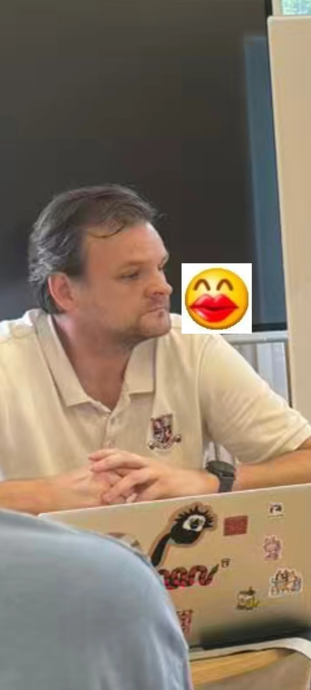

Willis Cup 2026
Hubei Harps vs BaiJi Rugby
A special match day bringing together Hubei Harps and BaiJi Rugby for the Willis Cup 2026. Follow the build-up, the action, and the club moments from the day.

About the Willis Cup
The Willis Cup 2026 is a club match day between Hubei Harps and BaiJi Rugby, celebrating sport, community, and friendly competition in Wuhan.
This page brings together the key photos from the day and gives supporters, players, and new visitors a place to look back on the event.
See the gallery →Willis Cup Gallery
Photos from Hubei Harps vs BaiJi Rugby.



Want to Get Involved?
Whether you are interested in playing, supporting, sponsoring, or joining a future event, get in touch with Hubei Harps.